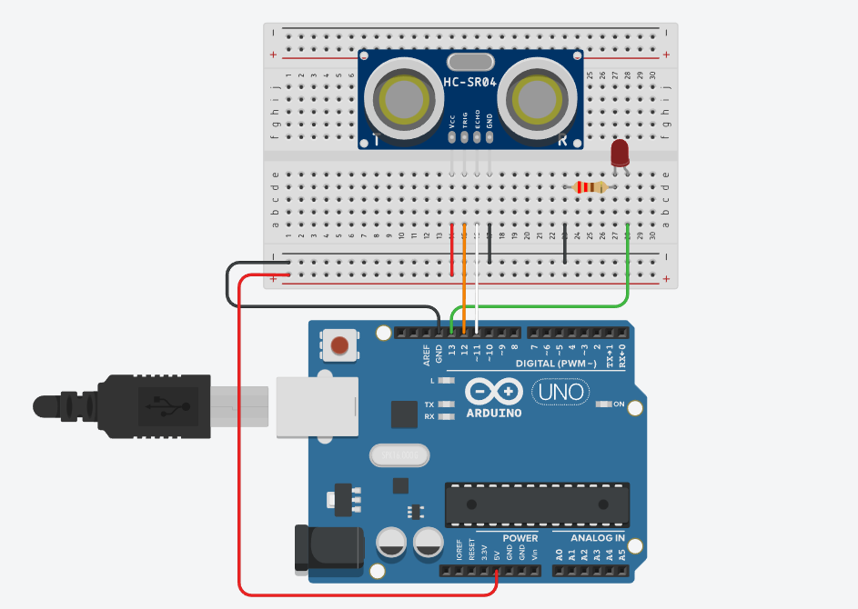

Guia Docente Robotica
Este es el incio de la guia para docentes en la cual aprenderas los conceptos basicos de robotica utilizando arduino
Conceptos Basicos
¿Qué es la robotica?
La robótica se ocupa del diseño, construcción, estructura y aplicación de robots. La robótica se estudia a través de ingenierías como electrónica, mecánica, mecatrónica, biomedicina e inteligencia artificial e informática.
¿Qué es un robot?
Un robot es una entidad virtual o mecánica artificial, generalmente es un sistema electromecánico que puede ser autónomo o controlado, el robot puede tener sensores que le permiten
adaptarse a nuevas situaciones y controlar su funcionamiento.
Existen varios tipos de robots, algunos pueden ser:
- Móviles
- Poliarticulados
- Androides
- Zoomórficos
- Híbridos
Los elementos básicos en la estructura de un robot son:
- Sensores
- Cerebro
- Actuadores
¿Qué es un sensor?
Un sensor es un dispositivo electrónico capaz de registrar cambios de un fenómeno físico o
químico cuantificable generando una señal eléctrica de acuerdo al estímulo recibido.
¿Cuál es el cerebro en un robot?

El cerebro es donde se realizan todos los procesos y decisiones del robot que dependen de las
lecturas de los sensores y que realizan las acciones en los actuadores del robot. El cerebro consta
de un microcontrolador el cuál tiene las mismas características de un equipo de cómputo, es
decir, se puede programar y consta de una memoria en la que se puede almacenar información.
¿Qué es un actuador?
Un actuador es un dispositivo electromecánico que convierte una señal eléctrica en una
acción física, por ejemplo un motor al recibir un voltaje realiza la acción de girar.
¿Qué es programa en computación?
Un programa es una secuencia de instrucciones que en conjunto realizan una o varias acciones
o tareas. Las instrucciones del programa se escriben en un lenguaje de programación específico
como lo son JavaScript, Java, Python, C, entre otros.
Introducción a Arduino

¿Qué es Arduino y para qué sirve?
Arduino es una placa para el desarrollo de proyectos. Todos los recursos de software y diseños
empleados por Arduino son abiertos, es decir, se pueden obtener de manera gratuita además
de poder modificarse sin ninguna restricción.
La placa Arduino debe de ser programada con las instrucciones que indiquen su funcionamiento. Para programar a la placa Arduino se puede emplear el IDE de Arduino además de
lenguajes de programación como Java, Python, Matlab, entre otros. Uno de los usos de la placa
Arduino es como el cerebro de un robot.
¿Qué es el IDE de Arduino?
El IDE de Arduino es el entorno de desarrollo en el que se escribe el programa para
controlar la placa Arduino, es decir, en el IDE se dan las instrucciones de funcionamiento de la
placa Arduino.
El nombre IDE es una abreviación de Integrated Development Enviroment en inglés que se
traduce como entorno integrado de desarrollo. El IDE de Arduino es descargable de manera
gratuita en la página https://www.arduino.cc/.
Escritura de mensajes y anotaciones en el IDE de Arduino
Para un mensajes de línea se escribe después de //, y para un mensaje de varias líneas se
escribe entre /* y */
// Este es un comentario
/* Este es un
comentario en
bloque */
Los mensajes en general sirven para dejar indicaciones o referencias sobre el código escrito.
¿Qué es una función en Arduino?
Una función es un conjunto de instrucciones que dependiendo de su definición, pueden
devolver algún valor o requerir de algún valor al ejecutarse. Las funciones se definen para
simplificar el código en procesos que se repetirán en varias ocasiones en el programa. Los
cálculos realizados por una función se realizan de manera independiente al resto del programa.
Para definir una función en el IDE de Arduino, se debe de escribir el tipo de variable devuelta
por la función, el nombre de la función con los parámetros o argumentos que requiera la función
y el cuerpo de la función compuesta por el código de las instrucciones que realiza la función.
tipoDevuelto nombreFunción(Argumento1, Argumento2, Argumento3, ...){
//Cuerpo de la función nombreFunción()
}
Por ejemplo si se define una función que realice la adición de dos números enteros deberá
de devolver el valor de la suma realizada el cual es un número entero, por lo que, el tipo de la
variable devuelta en este ejemplo es un número entero cuyo tipo es int (abreviatura de integer).
int nombreFunción(Argumento1, Argumento2, Argumento3, ...){
//Cuerpo de la función nombreFuncion()
}
El nombre de una función debe de representar la actividad que realiza, por ejemplo en el
caso de la función que devuelve la solución de la adición de dos números enteros el nombre
puede ser suma
int suma(Argumento1, Argumento2, Argumento3, ...){
//Cuerpo de la función suma()
}
Los argumentos o parámetros de una función son los valores requeridos por la función para
poder ejecutarse, en el caso de la función suma(), sus argumentos deben de ser los números
que van a sumarse, que para esta función estos números son enteros, es decir, de tipo int.
int suma(int i, int j){
//Cuerpo de la función suma()
}
En el cuerpo de la función se escribe el código que realice la actividad, este código se escribe
siempre dentro de las llaves {} que continúan al paréntesis de argumentos de la función. En el
caso de la función suma() el código debe de realizar la suma y devolver la solución.
int suma(int i, int j){
int resultado = i + j;
return resultado;
}
En el IDE de Arduino existen varias funciones predefinidas que se emplean para realizar
funciones básicas de la placa como lo son la escritura y lectura.
Para ejecutar una función, es necesario invocar la función escribiendo el nombre de la función
como sentencia en el código del programa donde se desea ejecutar, incluyendo los argumentos
necesarios para que pueda ejecutarse.
Variables
Tipos de variables
En la programación en el IDE de Arduino se tienen los siguientes tipos de variables:
- int (enteros)
- float (decimales)
- char (caracteres)
- boolean (booleana)
Para trabajar con números enteros se emplea int (entero), para trabajar con números decimales se emplea float (decimales),
para trabajar con letras o símbolos se emplea char (caracteres) y para trabajar con valores de verdadero o falso se emplea boolean.
Por ejemplo se declaran los varios tipos de variables en tres distintos lugares: fuera de las
funciones setup() y loop(), dentro del cuerpo de la función setup() y dentro del cuerpo de
la función loop().
Uso de variables y constantes
//EJEMPLO 1
int variable_01 = -7; //Número entero
float variable_02 = 8.2; //Número decimal
char variable_03 = 'A'; //Letra
boolean variable_04 = true; //Verdadero
void setup(){
}
void loop() {
}
//EJEMPLO 2
void setup(){
int variable_01 = -7; //Número entero
float variable_02 = 8.2; //Número decimal
char variable_03 = 'A'; //Letra
boolean variable_04 = true; //Verdadero
}
void loop() {
}
//EJEMPLO 3
void setup(){
}
void loop() {
int variable_01 = -7; //Número entero
float variable_02 = 8.2; //Número decimal
char variable_03 = 'A'; //Letra
boolean variable_04 = true; //Verdadero
}
El alcance o visibilidad de una variable define hasta que parte del código la variable puede ser empleada,
es decir, hasta que parte del código la variable existe y está definida de manera que cualquier cambio en la
variable será el mismo en las partes donde la variable sea visible o tenga alcance.
Para declarar una variable en el IDE de Arduino se hace escribiendo el tipo de variable seguido del nombre de la variable
igualada de manera opcional a un valor inicial. Cualquier declaración de una variable deberá de terminar en punto y coma.
Una variable global es aquella variable que es visible por todas las partes del código. En el IDE de Arduino esto se hace
definiendo las variables fuera de setup() y de loop(), de esta forma la variable es visible en cualquier parte del código.
En la imagen del ejemplo 1 las variables declaradas son globales.
Una variable local es aquella variable que es visible únicamente donde está definida. En el IDE de Arduino esto se hace definiendo
variables dentro de llaves, de esta forma la variable es visible únicamente dentro de las llaves donde está definida la variable.
En el caso de declarar variables dentro del cuerpo de setup() solo podrán ser vistas dentro del cuerpo de setup() , es decir son
locales dentro de la función setup() (véase en el ejemplo 2). En el caso de declarar las variables dentro del cuerpo de loop()
solo podrán ser vistas dentro del cuerpo de loop(), es decir son locales dentro de la función loop() (véase en el ejemplo 3)
CONSTANTES
Las variables que se deseen declarar como constantes son aquellas que su valor no cambie en ninguna parte del código y durante
la ejecución del programa. Por lo común las constantes se declaran de manera global, es decir, al principio y fuera de las funciones
setup() y loop/(). Para declarar como constante a una variable, se hace colocando el prefijo const.
Existe otra manera a través de #define seguido del nombre y el valor, en este caso la declaración no termina en punto y coma.
//EJEMPLO CONSTANTES
const int ladosCuadrado = 4 //Número entero
const float pi = 3.14; //Número decimal
const char primeraVocal = 'A'; //Letra
const boolean falso = false //verdadero
void setup(){
}
void loop() {
}
//EJEMPLO CONSTANTES EMPLEANDO EL #define
#define int ladosCuadrado = 4 //Número entero
#define float pi = 3.14; //Número decimal
#define char primeraVocal = 'A'; //Letra
#define boolean falso = false //verdadero
void setup(){
}
void loop() {
}
Operadores
Operadores aritmeticos
Los operadores aritméticos son las operaciones básicas que se pueden realizar con los números.
Se define entonces la suma, resta, producto, división y asignación.
Asignaciones compuestas
La operación de asignación se realiza con el signo de = y se hace cuando se asigna un valora una variable.
//SE DECLARA LA VARIABLE ENTERA numero
int numero = 10;
//Y SE LE ASIGNA EL VALOR DE 10 EMPLEANDO EL OPERADOR =
También es posible modificar el valor asignado a la variable.
//SE DECLARA LA VARIABLE ENTERA numero
int numero = 10;
//Y SE LE ASIGNA EL VALOR DE 10 EMPLEANDO EL OPERADOR =
numero = -12;
//SE ASIGNA EL VALOR DE -12 A LA VARIABLE numero
//EMPLEANDO EL OPERADOR =
Es posible modificar un valor de una variable empleando a la misma variable, es decir, asignarle un valor
nuevo a la variable empleando su valor anterior a la modificación. Por ejemplo, si se modifica el valor de
la variable número a un nuevo valor igual a el valor que tenía la variable antes de la modificación número
más cinco unidades.
//SE DECLARA LA VARIABLE NUMERO LA CUAL SUMARA 5 AL NUMERO
numero = numero + 5;
Otros ejemplos de operadores son:
//SUMA 5 A x Y GUARDA EL VALOR OBTENIDO EN x
x = x + 5;
//RESTA 6 A z Y GUARDA EL RESULTADO EN z
z = z - 6;
//MULTIPLICA LOS VALORES DE a Por b por c
//y asigna el resultado en la variable Volumen
Volumen = a*b*c;
//DIVIDE ENTRE 4 AL VALOR DE q y guarda el resultado en q
q = q/4;
//SE ASIGNA EL VALOR DE 2 a la variable r
r = 2;
Existen otros operadores que se utilizan si se desea abreviar las operaciones anteriores.
//EQUIVALENTE A x = x+2;
x += 2;
//EQUIVALENTE A y = y - 3;
y -= 3;
//EQUIVALENTE A z = z * 7;
z *= 7;
//EQUIVALENTE A w = w/4;
w /= 4;
Además de los operador incremento y decremento.
//EQUIVALENTE A x = x + 1; INCREMENTA EL VALOR DE x EN UNO
x++;
//EQUIVALENTE A x = x - 1; DECREMENTA EL VALOR DE x EN UNO
x--;
Operadores de comparación
Al comparar valores se establece una condición que puede ser verdadera o falsa. Para establecer
una condición se emplean los operadores de comparación. si x = 2, entonces
//ES VERDADERO, ¿x ES MENOR QUE 3?
x < 3;
//ES FALSO, ¿x ES MAYOR QUE 3
x > 3;
//ES VERDADERO, ¿x ES MENOR O IGUAL 2?
x<=2;
//ES VERDADERO, ¿x es MAYOR O IGUAL a 2?
x>=2;
//ES VERDADERO, ¿x ES IGUAL A 2?
x==2;
//ES FALSO, ¿x NO ES IGUAL 2?
x!=2;
El resultado de hacer una comparación es verdadero o falso, por lo que su resultado puede ser almacenado en una variable booleana.
boolean valor = x < 3;
Operadores lógicos
Para comparar varias condiciones se emplean los operadores lógicos. Los operadores lógicos son el
“o” y el “y” cuyos símbolos son respectivamente || y &&, estos operadores cumplen con las tablas de verdad.
| Condición |
Operador |
Condición |
Resultado |
| VERDADERO |
&& |
VERDADERO |
VERDADERO |
| VERDADERO |
&& |
FALSO |
FALSO |
| FALSO |
&& |
VERDADERO |
FALSO |
| FALSO |
&& |
FALSO |
FALSO |
| VERDADERO |
|| |
VERDADERO |
VERDADERO |
| VERDADERO |
|| |
FALSO |
FALSO |
| FALSO |
|| |
VERDADERO |
FALSO |
| FALSO |
|| |
FALSO |
FALSO |
Prototipo del robot
Sensor UltraSonido
Un sensor de ultrasonido es un dispositivo que es capaz de calcular la distancia a la que se encuentra un objeto utilizando ondas de alta frecuencia. La señal es inaudible para el ser humano. Este tipo de sensores constan de dos partes fundamentales. Nos referirnos a los dos cilindros del dispositivo. Uno de ellos es el emisor que emite la señal y el otro el receptor que recibe la señal en el caso de que rebote sobre algún obstáculo cercano hacia el sensor. Sabiendo cuanto ha tardado en viajar dicha onda, podemos saber la distancia (Moreno Muñoz A. y. pp. 166 2018,).
ESQUEMA MONTAJE

EJEMPLO DE CÓDIGO
const int Trigger = 12; //Pin digital 2 para el Trigger del sensor
const int Echo = 11; //Pin digital 3 para el echo del sensor
const int Led = 13;
void setup() {
Serial.begin(9600);//iniciailzamos la comunicación
pinMode(Led, OUTPUT);//pin como salida
pinMode(Trigger, OUTPUT); //pin como salida
pinMode(Echo, INPUT); //pin como entrada
digitalWrite(Trigger, LOW);//Inicializamos el pin con 0
}
void loop() {
long t; //tiempo que demora en llegar al eco
long d; //distancia en centimetros
digitalWrite(Trigger, HIGH); //Mandamos un pulso al Trigger
delayMicroseconds(10); //Espera
digitalWrite(Trigger, LOW);
t= pulseIn(Echo, HIGH); //encontramos el ancho del pulso
d=t/59; //hacemos la relacion de la distamcia en cm segun el tiempo
if(d<50){ //si la distancia es menor a 10cm
digitalWrite(Led, HIGH); //Enciende el led
} else{ //sino
digitalWrite(Led, LOW); //Apaga el led
}
Serial.print("Distancia: ");
Serial.print(d);
erial.print("cm");
Serial.println();
delay(100);
}
Buzzer
Buzzer Activo 5v es un transductor electroacústico, es decir, un dispositivo que convierte la señal eléctrica en acústica. Su construcción consta de una bobina y un electroimán.
ESQUEMA MONTAJE

EJEMPLO DE CÓDIGO
const int pinBuzzer = 10;
void setup()
{
}
void loop()
{
//generar tono de 440Hz durante 1000 ms
tone(pinBuzzer, 440);
delay(1000);
//detener tono durante 500ms
noTone(pinBuzzer);
delay(500);
//generar tono de 523Hz durante 500ms, y detenerlo durante 500ms.
tone(pinBuzzer, 523, 300);
delay(500);
}